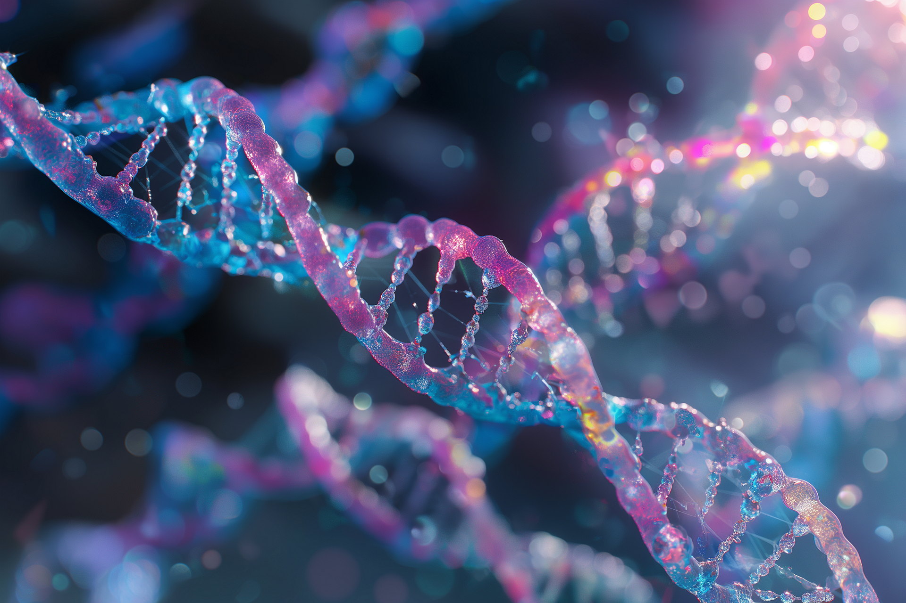

Obesity is often influenced by diet and lifestyle choices. This includes consuming foods high in fat and sugar, excessive alcohol intake,
frequent dining out, eating larger portions, drinking sugary beverages, and comfort eating due to emotional factors.
It must also be noted that societal changes can also play a role, as high-calorie foods have become more affordable,
convenient, and heavily advertised, making it harder to maintain a healthy diet.
The World Health Organisation defines obesity as “abnormal or excessive fat
accumulation that presents a risk to health.
A body mass index (BMI) over 25 is considered overweight, and over 30 is obese”
Causes of Obesity
The NHS states that these are the main causes for individuals becoming obese
Diet
Activity

Lack of physical activity is an important factor related to obesity.
Many people have jobs that involve sitting at a desk for most of the day.
Consequently, if you are not active enough, you do not use the
energy provided by the food you eat.
The extra energy you consume is stored by the body as fat.
Genetics

Genetics can play a significant role in obesity by influencing how the body processes food, stores fat, and affects lifestyle choices.
Some rare genetic conditions, like Prader-Willi syndrome, can directly cause obesity.
Inherited traits, such as a large appetite, may make weight loss more challenging but not impossible.
Support and treatment for Obesity
The NHS also offers advice on how manage or treat Obesity
Diet Programme
To lose weight safely, an individual needs to reduce their daily intake by around 600 calories to aim for 0.5–1 kg (1–2 lbs) loss per week.
Men should aim for 1,900 calories daily and women 1,400. Replace high-calorie foods with healthier options like fruits, vegetables, whole grains,
protein, and minimal high-fat or sugary foods.
It is crucial that you track calories carefully, especially when eating out, as some foods can quickly exceed the daily limit.
Exercise

To maintain a healthy weight, physical activity is essential to burn the excess calories.
Exercise also has other health benefits, like reducing the risk of conditions such as type 2 diabetes.
It is recommended that an individual completes at least 150 minutes of moderate-intensity activity, like brisk walking or cycling,
or 75 minutes of vigorous-intensity activity, like running, per week. Strength and balance exercises should be done two days a week.
Start gradually, find activities you enjoy, and seek support to create a personalised plan.
Surgery

Bariatric (weight loss) surgery is used to treat severe obesity and is typically available on the NHS for individuals with a BMI of 40 or more,
or between 35 and 40 with a related health condition (e.g type 2 diabetes).
It’s considered when other weight loss methods have failed, and the person is fit for surgery. Bariatric surgery may be their only option.
In rare cases, it may be recommended for individuals with a BMI of 50 or more.